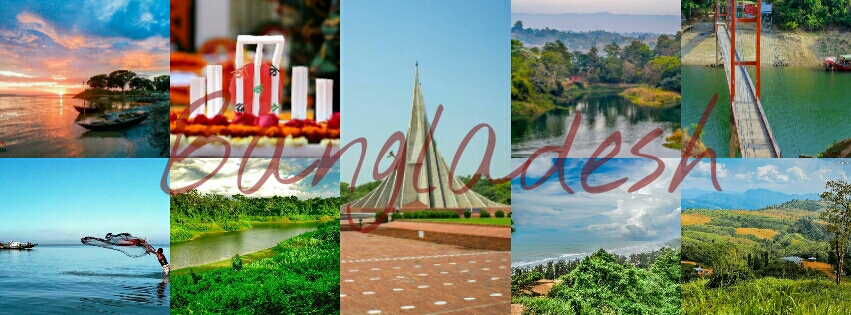

Bangladesh is constitutionally a secular country.Although removed from the constitution once,it was later reinstated.Islam is the largest religion of Bangladesh;Muslims constitute 90.2% of the population,followed by Hindus,who constitute 8.2% and Buddhists, Christians,those who practice other religions and those who do not are the remainders.[self-published source] A survey in late 2003 confirmed that religion is the first choice by a citizen for self-identification. Bangladesh only recognises Islam, Christianity, Hinduism, and Buddhism.
RELIGION IN BANGLADESH
Islam (90.2%) Hinduism (8.2%) Buddhism (0.6% ) Christianity (0.3%) Others (0.5%)